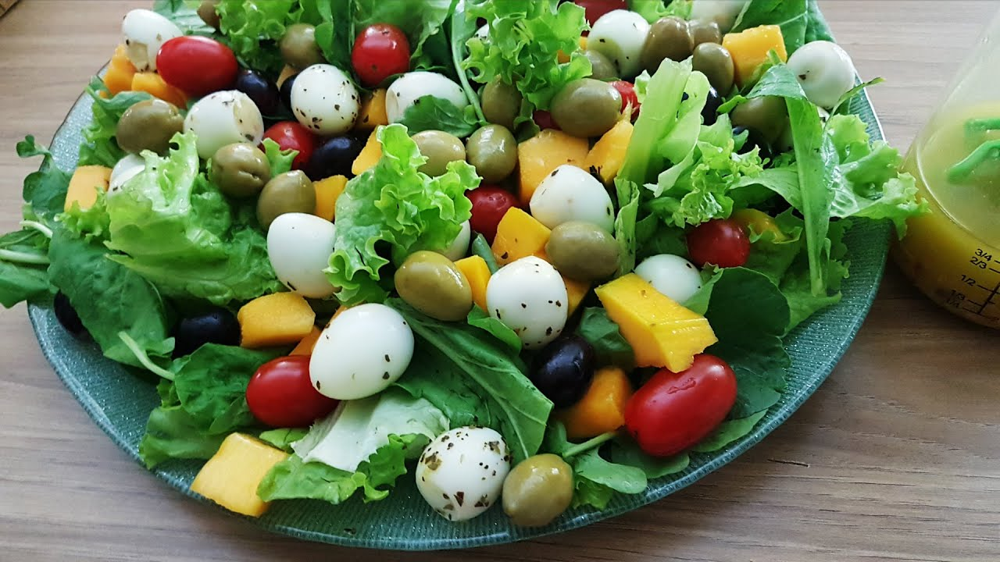

Entradas

Salada Verde
Uma salada fresca e crocante para começar.
Tempo de preparo: 15 minutos
Porções: 4
Ingredientes:
- 1 maço de alface romana
- 1 pepino fatiado
- 1 cenoura ralada
- 1/2 cebola roxa fatiada
- 10 tomates-cereja cortados ao meio
- 1/4 xícara de nozes picadas
- Suco de 1 limão
- 2 colheres de sopa de azeite de oliva
- Sal e pimenta a gosto
Modo de Preparo:
- Lave bem as folhas de alface e rasgue-as em pedaços menores.
- Em uma saladeira, misture o alface, o pepino, a cenoura, a cebola roxa e os tomates-cereja.
- Adicione as nozes picadas por cima.
- Em uma tigela pequena, misture o suco de limão, o azeite, o sal e a pimenta para fazer o molho.
- Regue a salada com o molho e misture delicadamente.
- Sirva imediatamente.

Bruschetta
Torradas com tomates frescos, manjericão e azeite.
Tempo de preparo: 20 minutos
Porções: 6
Ingredientes:
- 6 fatias de pão italiano
- 3 tomates maduros picados
- 1 dente de alho
- Folhas de manjericão fresco
- 2 colheres de sopa de azeite de oliva
- Sal e pimenta a gosto
Modo de Preparo:
- Torre as fatias de pão italiano até ficarem douradas.
- Esfregue o dente de alho nas fatias de pão torrado.
- Em uma tigela, misture os tomates picados, o manjericão, o azeite, o sal e a pimenta.
- Coloque a mistura de tomate sobre as fatias de pão.
- Sirva imediatamente.
Sopa de Abóbora
Uma sopa leve e saborosa de abóbora com especiarias.
Tempo de preparo: 45 minutos
Porções: 4
Ingredientes:
- 1 kg de abóbora picada
- 1 cebola picada
- 2 dentes de alho picados
- 1 litro de caldo de legumes
- 1 colher de chá de gengibre ralado
- 1 colher de chá de cominho em pó
- 2 colheres de sopa de azeite de oliva
- Sal e pimenta a gosto
- Creme de leite para servir (opcional)
Modo de Preparo:
- Em uma panela, aqueça o azeite e refogue a cebola e o alho até ficarem macios.
- Adicione a abóbora, o gengibre e o cominho, e refogue por alguns minutos.
- Adicione o caldo de legumes e deixe cozinhar até a abóbora ficar macia, cerca de 20 minutos.
- Bata a sopa no liquidificador até obter uma consistência cremosa.
- Tempere com sal e pimenta a gosto.
- Sirva quente, com um fio de creme de leite se desejar.